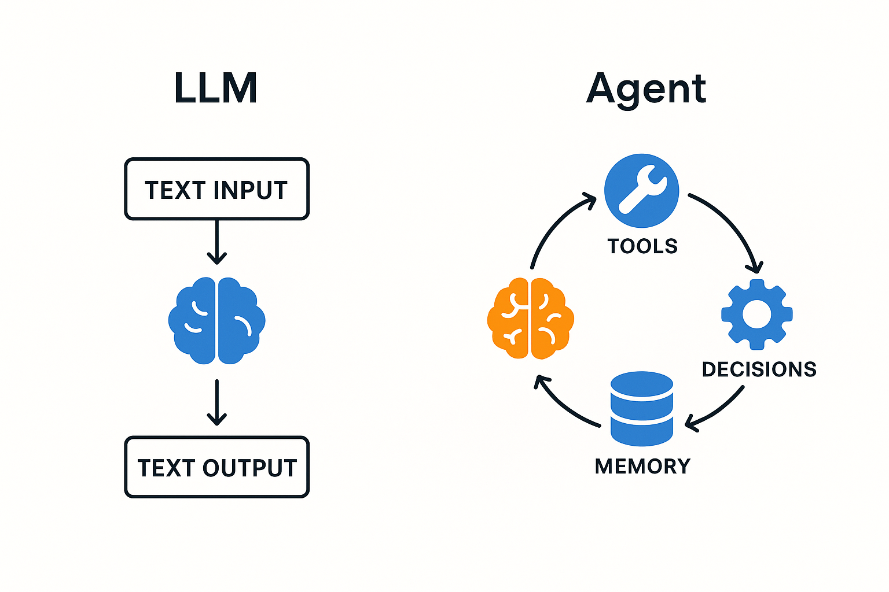
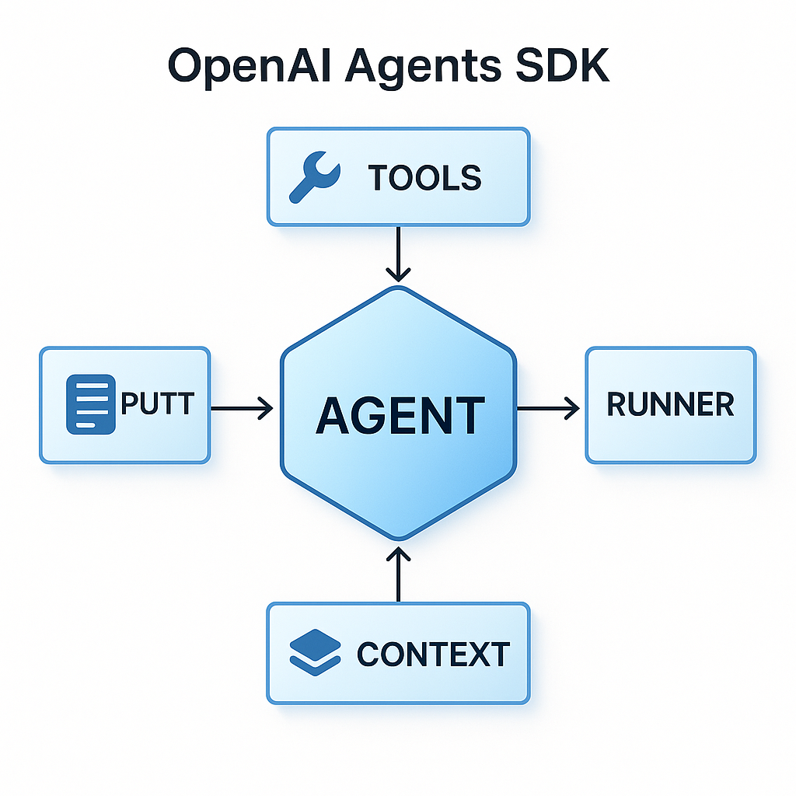
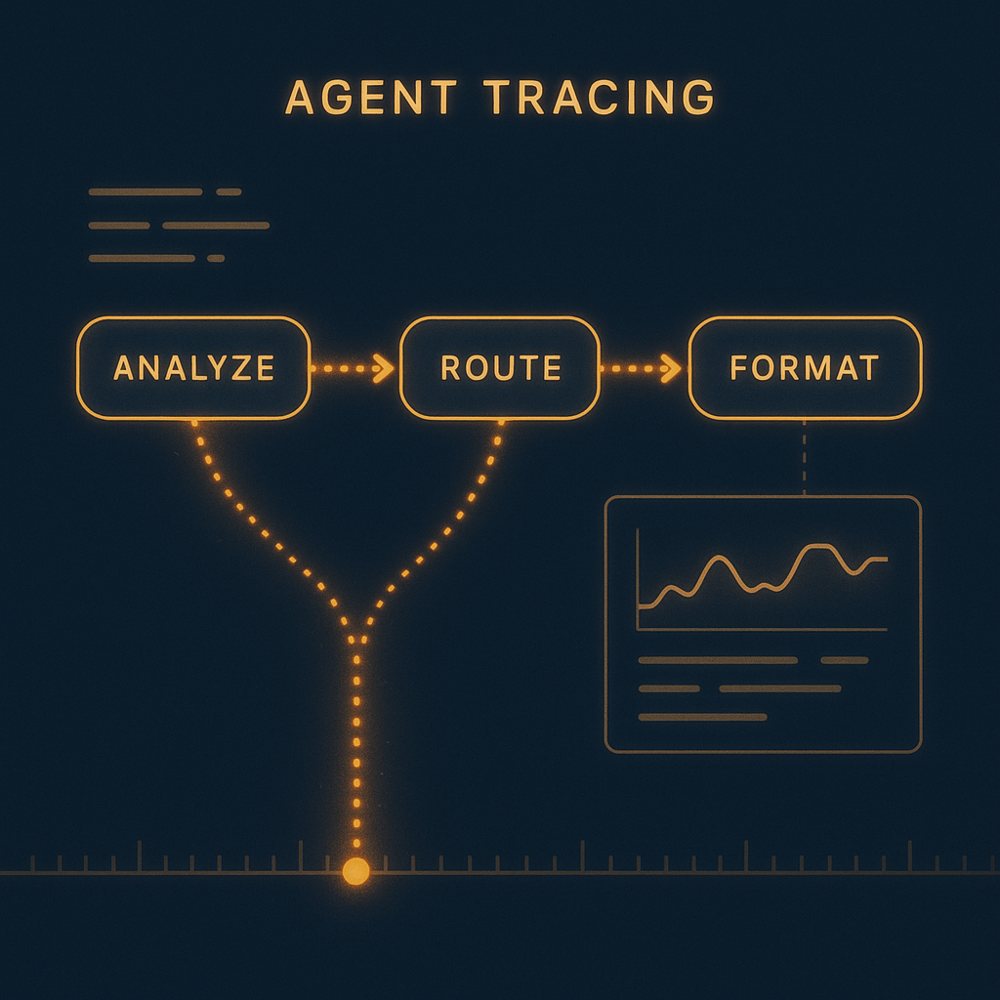
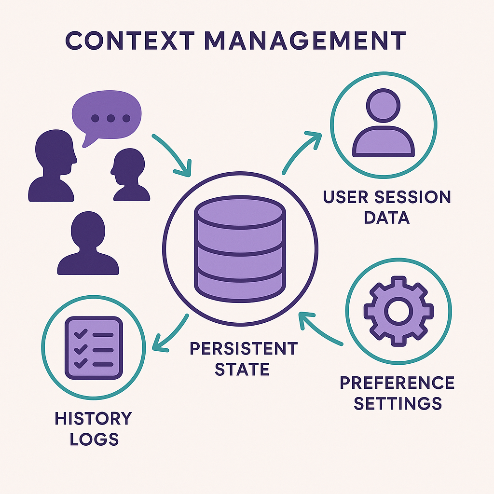
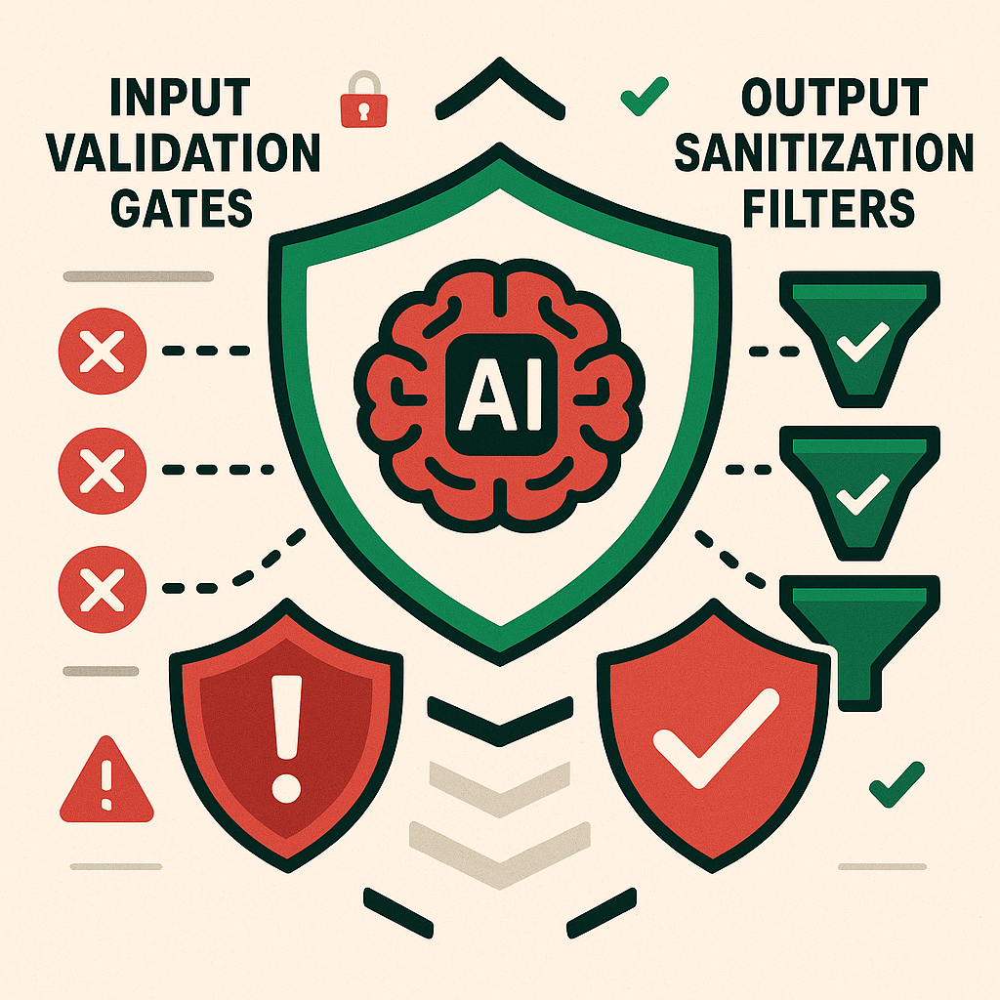
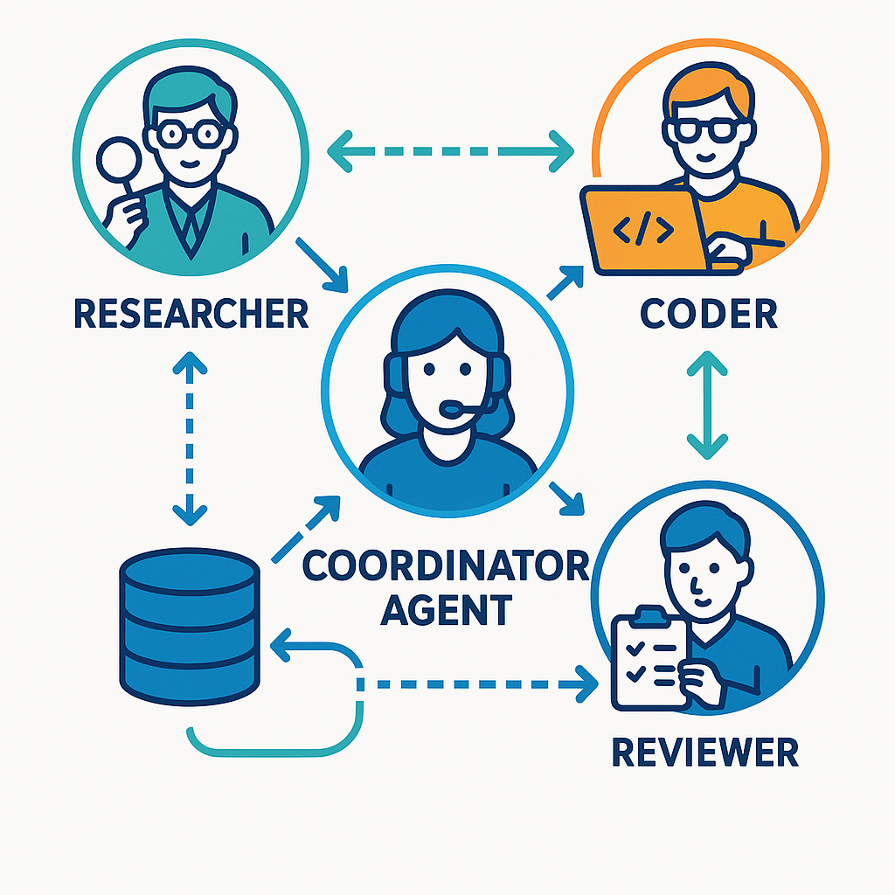
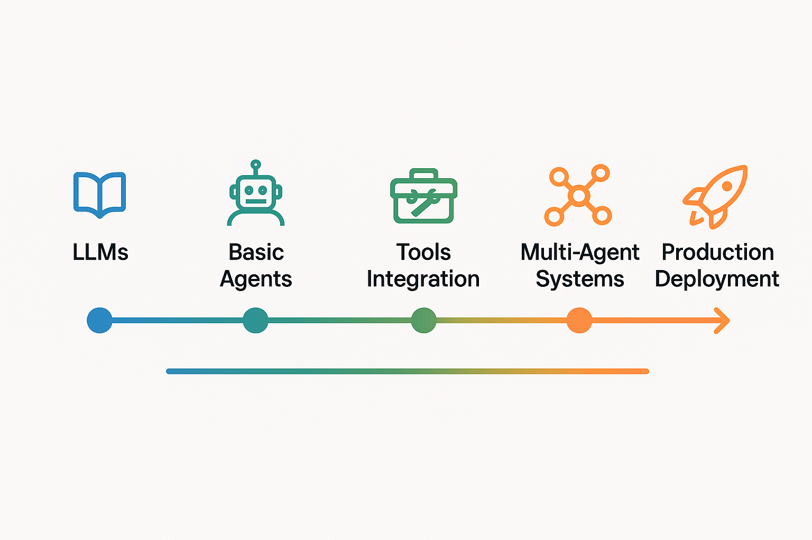

class: center, middle, inverse # Getting Started with OpenAI Agents SDK ## Lucas Soares ### 08/27/2025 .footnote[O'Reilly Live Training] --- # Agenda 1. **Evolution: From LLMs to Agents** -- 2. **OpenAI Agents SDK Core Concepts** -- 3. **Building Your First Agent** -- 4. **Tools & Function Calling** -- 5. **MCP (Model Context Protocol) Tools** -- 6. **Handoffs, Tracing & Context** -- 7. **Guardrails & Multi-Agent Systems** -- 8. **Hands-on Demo & Q&A** --- class: inverse, center, middle # From LLMs to Agents ### Understanding the Evolution --- class: center, middle # LLMs vs Agents <div style="text-align: center;">  </div> --- # Key Differences ## LLMs: Text Generation - Input text → Process → Output text - Stateless operations - No external interactions ## Agents: Action & Decision Making - Perceive → Decide → Act → Learn - Maintain state across interactions - Use tools to interact with world .footnote[Source: [OpenAI Agents Documentation](https://openai.github.io/openai-agents-python/)] --- # Why Agents Matter <div style="display: flex; align-items: center; gap: 20px;"> <div style="flex: 1;"> <h3>Capabilities</h3> <ul> <li>Use tools & APIs</li> <li>Make decisions</li> <li>Complete workflows</li> <li>Maintain state</li> </ul> </div> <div style="flex: 1;"> <h3>Impact</h3> <ul> <li>Task automation</li> <li>Real-time data access</li> <li>Error handling</li> <li>Adaptive behavior</li> </ul> </div> </div> > "Agents transform AI from conversational to operational" --- class: inverse, center, middle # OpenAI Agents SDK ### Core Architecture & Concepts --- class: center, middle <div style="text-align: center;">  </div> --- # Core Components - **Agent** - The intelligent core with instructions and model -- - **Tools ** - External capabilities (functions, APIs, other agents) -- - **Runner** - Execution engine for agent interactions -- - **Context** - State management across runs .footnote[Source: [SDK Quickstart Guide](https://openai.github.io/openai-agents-python/quickstart/)] --- # Three Essential Patterns ## 1. Basic Agent Creation ```python from agents import Agent agent = Agent( name="Assistant", instructions="You are a helpful assistant", model="gpt-4o-mini" ) ``` ## 2. Tool Definition ```python from agents import function_tool @function_tool def get_weather(city: str) -> str: """Get weather for a city""" return f"Weather data for {city}" ``` --- # Three Essential Patterns (cont.) ## 3. Execution Methods ### Synchronous ```python result = Runner.run_sync(agent, "Hello") ``` ### Asynchronous ```python result = await Runner.run(agent, "Hello") ``` ### Streaming ```python async for event in Runner.run_streamed(agent, "Hello"): print(event.delta, end="") ``` .footnote[Source: [Running Agents Guide](https://openai.github.io/openai-agents-python/running/)] --- class: inverse, center, middle # Building Agents ### From Simple to Complex --- # Your First Agent ```python from agents import Agent, Runner # Create an agent agent = Agent( name="MyFirstAgent", instructions="You are a helpful assistant", model="gpt-4o-mini" # Cost-effective model ) # Run synchronously result = Runner.run_sync( agent, "Write a haiku about recursion" ) print(result.final_output) ``` Output: ``` Recursion calls itself, Depth within depth, it descends— Base case brings it home. ``` --- class: center, middle <h1> <span style="background-color: lightgreen"> Demo: Building Your First Agent </span> </h1> --- class: inverse, center, middle # Tools & Functions ### Extending Agent Capabilities --- ## Built-in Tools ```python from agents.tools import WebSearchTool, FileSearchTool web_tool = WebSearchTool( user_location={"type": "approximate", "city": "NYC"} ) ``` ## Custom Function Tools ```python @function_tool def calculate(expression: str) -> str: """Evaluate a mathematical expression""" return str(eval(expression)) ``` ## When to Use Each - **Built-in**: For common tasks (web search, file ops) - **Custom**: For domain-specific logic --- # Complete Tool Example ```python from agents import Agent, Runner, function_tool from datetime import datetime @function_tool def get_current_time(timezone: str = "UTC") -> str: """Get current time in specified timezone""" return datetime.now().strftime("%Y-%m-%d %H:%M:%S") @function_tool def calculate_days(date1: str, date2: str) -> int: """Calculate days between two dates""" # Implementation here return days_difference agent = Agent( name="TimeKeeper", instructions="Help with time and date queries", tools=[get_current_time, calculate_days] ) ``` .footnote[Source: [Tools Documentation](https://openai.github.io/openai-agents-python/tools/)] --- # Structured Outputs ## Using Pydantic Models ```python from pydantic import BaseModel from agents import Agent, Runner class UserInfo(BaseModel): name: str age: int interests: list[str] agent = Agent( name="DataCollector", instructions="Extract user information", model="gpt-4o-mini", output_type=UserInfo # Structured output ) result = Runner.run_sync(agent, "John is 25 and likes coding and hiking") # result.final_output is now a UserInfo instance ``` .footnote[Source: [Agents Guide](https://openai.github.io/openai-agents-python/agents/)] --- class: inverse, center, middle # MCP Tools ### Model Context Protocol Integration --- # What is MCP? ## Model Context Protocol - **Open protocol** for connecting AI systems to data sources - **Standardized interface** for tool integration - **Secure context sharing** between applications ## Why MCP with Agents? - Access **local and remote resources** seamlessly - **Unified tool interface** across different systems - **Production-ready integrations** out of the box > "MCP bridges the gap between AI agents and real-world systems" .footnote[Source: [MCP Documentation](https://openai.github.io/openai-agents-python/mcp/)] --- # MCP Architecture <div style="display: flex; gap: 40px; justify-content: center;"> <div> <h3>Components</h3> <ul> <li><strong>MCP Servers</strong> - Expose resources</li> <li><strong>MCP Clients</strong> - Consume resources</li> <li><strong>Transport Layer</strong> - Communication</li> </ul> </div> <div> <h3>Resource Types</h3> <ul> <li>Tools (functions)</li> <li>Resources (data)</li> <li>Prompts (templates)</li> </ul> </div> </div> ```python from agents import Agent from agents.tools import MCPServerStdio # Connect to MCP server mcp_server = MCPServerStdio( command="uvx", args=["mcp-server-filesystem", "/Users/data"] ) agent = Agent( name="FileAgent", tools=[mcp_server] # MCP as a tool source ) ``` --- # Using MCP Tools ## Standard I/O Server ```python from agents.tools import MCPServerStdio # Filesystem access via MCP fs_server = MCPServerStdio( command="npx", args=["-y", "@modelcontextprotocol/server-filesystem", "/home"] ) ``` ## Streamable HTTP ```python from agents.tools import MCPServerStreamableHttp # Server-sent events connection sse_server = MCPServerStreamableHttp( url="http://localhost:8080/mcp" ) ``` --- ## Examples of Available MCP Servers - `mcp-server-filesystem` - File operations - `mcp-server-git` - Git repository access - `mcp-server-github` - GitHub API integration - `mcp-server-sqlite` - Database operations --- # Complete MCP Example ```python from agents import Agent, Runner from agents.tools import MCPServerStdio # Setup MCP server for Git operations git_server = MCPServerStdio( command="npx", args=["-y", "@modelcontextprotocol/server-git", "--repository", "/path/to/repo"] ) # Create agent with MCP tools agent = Agent( name="GitExpert", instructions="Help with git repository analysis", model="gpt-4o-mini", tools=[git_server] # MCP provides multiple tools ) # Use the agent - MCP tools are auto-discovered result = Runner.run_sync( agent, "Show me recent commits and their authors" ) print(result.final_output) ``` .footnote[Source: [MCP Integration Guide](https://openai.github.io/openai-agents-python/mcp/)] --- class: center, middle # <h1><span style="background-color: lightgreen">Demo: Building a Simple Research Agent</span></h1> --- class: inverse, center, middle # Handoffs, Tracing & Context ### Building Stateful Agent Workflows --- # Agent Handoffs ## Delegating to Specialized Agents <div style="text-align: center;"> <img src="../assets/agent-handoffs.png" alt="Agent Handoffs Workflow" style="width: 80%;"> </div> --- # Handoffs **Key Benefits:** - **Specialization** - Each agent focuses on specific expertise - **Scalability** - Add new specialists without changing core logic - **Flexibility** - Dynamic routing based on query analysis --- ```python from agents import Agent # Specialized agents spanish_agent = Agent( name="SpanishExpert", instructions="You only speak Spanish. Help Spanish speakers." ) technical_agent = Agent( name="TechnicalExpert", instructions="You handle technical support queries." ) # Router agent with handoffs router_agent = Agent( name="Router", instructions="Route queries to the appropriate specialist", handoffs=[spanish_agent, technical_agent] ) ``` .footnote[Source: [Handoffs Documentation](https://openai.github.io/openai-agents-python/handoffs/)] --- # Tracing Agent Workflows ## Monitoring Complex Operations <div style="text-align: center;">  </div> --- # Tracing **Tracing Benefits:** - **Debugging** - See exact execution path and timing - **Performance** - Identify bottlenecks in agent workflows - **Monitoring** - Track success/failure patterns ```python from agents import trace, set_tracing_disabled # Group related operations with tracing async def process_customer_request(query: str): with trace("customer_workflow"): # Initial analysis with trace("analyze"): analysis = await Runner.run(analyzer_agent, query) # Route to specialist with trace("route"): response = await Runner.run(router_agent, analysis) # Format final response with trace("format"): final = await Runner.run(formatter_agent, response) return final # Disable tracing in production set_tracing_disabled(True) ``` .footnote[Source: [Tracing Guide](https://openai.github.io/openai-agents-python/tracing/)] --- # Context Management ## Maintaining State Across Runs <div style="text-align: center;">  </div> --- # Context Management **Context Capabilities:** - **Persistent Memory** - Maintain state between agent runs - **User Sessions** - Track individual user interactions - **Shared Data** - Access context across multiple tools --- ```python from agents import RunContextWrapper, function_tool class UserSession: def __init__(self, user_id: str): self.user_id = user_id self.history = [] self.preferences = {} @function_tool async def get_user_history( ctx: RunContextWrapper[UserSession] ) -> str: session = ctx.context return f"User {session.user_id} has {len(session.history)} messages" @function_tool async def update_preferences( ctx: RunContextWrapper[UserSession], key: str, value: str ) -> str: ctx.context.preferences[key] = value return f"Updated preference: {key}={value}" ``` --- class: center, middle # <h1><span style="background-color: lightgreen">Demo: Building a Spreadsheet Agent</span></h1> --- class: inverse, center, middle # Guardrails & Multi-Agent Systems ### Safe and Scalable Agent Architectures --- # Guardrails ## Ensuring Safe Agent Behavior <div style="text-align: center;">  </div> --- # Guardrails **Security Layers:** - **Input Validation** - Filter dangerous or malformed inputs - **Output Sanitization** - Remove sensitive information from responses - **Rate Limiting** - Prevent abuse and resource exhaustion --- ```python from agents import input_guardrail, output_guardrail @input_guardrail async def validate_spreadsheet_input(ctx, agent, input_data): # Check for malicious formulas if "=cmd" in input_data.lower() or "=shell" in input_data.lower(): raise ValueError("Potentially dangerous formula detected") # Validate data size if len(input_data) > 10000: raise ValueError("Input data too large") @output_guardrail async def sanitize_output(ctx, agent, output): # Remove any sensitive patterns import re output = re.sub(r'password["\']?\s*[:=]\s*["\']?[\w]+', 'password=***', output) return output secure_agent = Agent( name="SecureSpreadsheetAgent", input_guardrails=[validate_spreadsheet_input], output_guardrails=[sanitize_output] ) ``` .footnote[Source: [Guardrails Documentation](https://openai.github.io/openai-agents-python/guardrails/)] --- # Multi-Agent Architecture ## Orchestrating Complex Workflows <div style="text-align: center;">  </div> --- # Multi-Agent Architecture ## Architecture Benefits: - **Specialization** - Each agent excels at specific tasks - **Coordination** - Central orchestration prevents chaos - **Scalability** - Add agents without changing core logic --- # Multi-Agent Architecture ```python from agents import Agent, Runner # Research agent research_agent = Agent( name="Researcher", instructions="Research topics thoroughly using web search", tools=[WebSearchTool()] ) # Coding agent coding_agent = Agent( name="Coder", instructions="Write clean, well-documented code", model="gpt-4o" ) # Coordinator agent coordinator = Agent( name="Coordinator", instructions=""" Coordinate research and coding tasks: 1. Use researcher for gathering information 2. Use coder for implementation 3. Ensure quality and completeness """, handoffs=[research_agent, coding_agent] ) ``` --- # Scaling Best Practices <div style="display: flex; gap: 40px; justify-content: center;"> <div style="flex: 1; min-width: 220px;"> <h3>Architecture</h3> <ul> <li>Single coordinator pattern</li> <li>Clear agent responsibilities</li> <li>Minimal handoff chains</li> <li>Stateless when possible</li> </ul> </div> <div style="flex: 1; min-width: 220px;"> <h3>Safety</h3> <ul> <li>Input validation at entry</li> <li>Output sanitization</li> <li>Rate limiting</li> <li>Timeout controls</li> </ul> </div> </div> ```python # Production multi-agent setup coordinator = Agent( name="SafeCoordinator", instructions="Coordinate safely with timeouts", handoffs=[agent1, agent2], input_guardrails=[validate_input], output_guardrails=[sanitize_output] ) # Run with timeout result = await Runner.run(coordinator, query, timeout=60) ``` .footnote[Source: [Multi-Agent Systems](https://openai.github.io/openai-agents-python/multi_agent/)] --- class: center, middle # <h1><span style="background-color: lightgreen">Demo: Building a Multi-Agent System for Research and Coding</span></h1> --- class: inverse, center, middle # Key Takeaways --- # Your Learning Journey <div style="text-align: center;">  </div> ✅ **Agents add actions** to language models ✅ **SDK provides** production-ready patterns ✅ **Start simple**, add complexity gradually ✅ **Tools unlock** real-world integration --- # Connect With Me ## 📚 [Course materials]() ## 🔗 [LinkedIn](https://www.linkedin.com/in/lucas-soares-969044167/) ## 🐦 [Twitter/X - @LucasEnkrateia](https://x.com/LucasEnkrateia) ## 📺 [YouTube - @automatalearninglab](https://www.youtube.com/@automatalearninglab) ## 📧 Email: lucasenkrateia@gmail.com --- # Resources & Documentation ### Official Documentation - [OpenAI Agents Python SDK](https://openai.github.io/openai-agents-python/) - [Quickstart Guide](https://openai.github.io/openai-agents-python/quickstart/) - [API Reference](https://openai.github.io/openai-agents-python/ref/) ### Practical Resources - [Building Agents Manual (PDF)](https://cdn.openai.com/business-guides-and-resources/a-practical-guide-to-building-agents.pdf) - [GitHub Examples](https://github.com/openai/openai-agents-python/tree/main/examples) - [Model Selection Guide](https://cookbook.openai.com/examples/partners/model_selection_guide/model_selection_guide) ### Video Tutorials - [Building Agents Tutorial](https://youtu.be/35nxORG1mtg) - [Architecture Deep Dive](https://www.youtube.com/watch?v=-rsTkYgnNzM) --- class: center, middle, inverse # Thank You! ## Start Building Today ```bash pip install openai-agents ``` ### Questions? #### Contact & Community [GitHub Discussions](https://github.com/openai/openai-agents-python) | [Documentation](https://openai.github.io/openai-agents-python/)